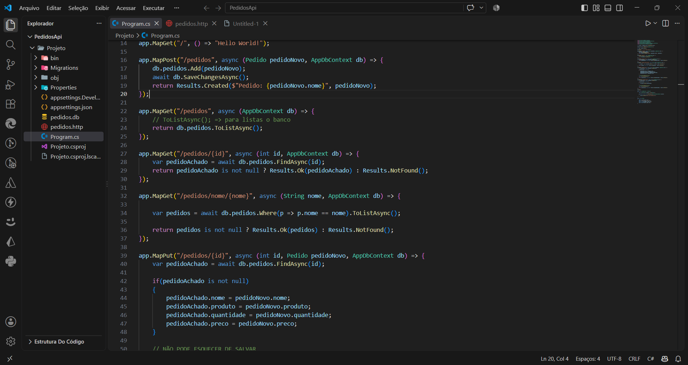

API de Pedidos
Projeto desenvolvido utilizando C#, ASP.NET Core Minimal API, Entity Framework Core e SQLite, com o objetivo de implementar uma API REST para gerenciamento de pedidos, realizando operações completas de CRUD (Create, Read, Update e Delete).
C#
ASP.NET Core Minimal API